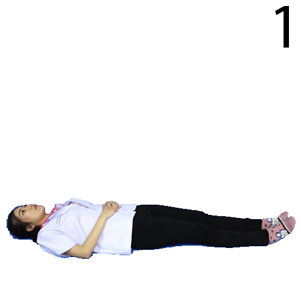
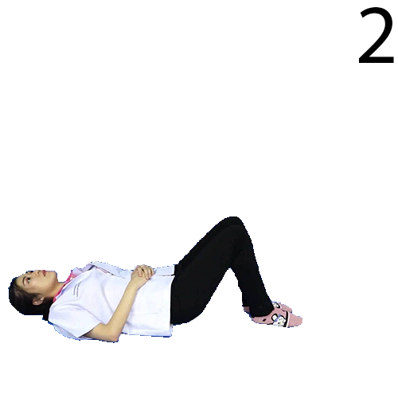
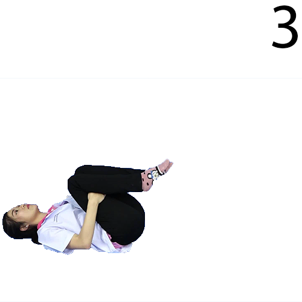

กอดเข่าชิดอก (ยืดหลังส่วนล่าง)
(Knee to chest)
  
1. นอนหงาย ชันเข่าสองข้าง
2. เอามือทั้ง 2 ข้างสอดใต้เข่า แล้วดึงมาชิดอก
3. ค้างไว้ วินาที แล้ววางลง
4. ทำซ้ำ ครั้ง ทำ ครั้ง/วัน
"สแกนโค้ดด้านล่างหรือคลิกเพื่อชมวิดีโอ"